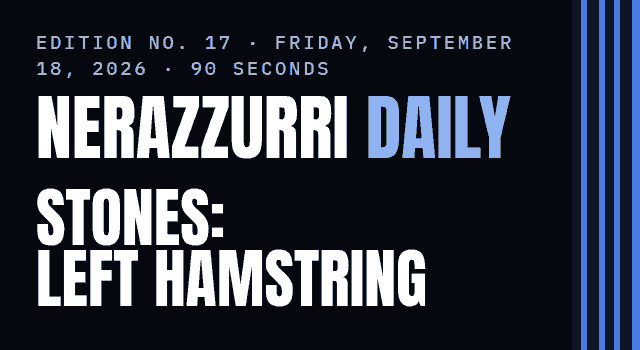

Inter have put a name on John Stones' injury: scans on Thursday found a strain in the hamstring of his left thigh, and the club set no return date. Corriere dello Sport expects him back with Hakan Çalhanoğlu at home to Parma on October 10. That leaves Cristian Chivu without both at the Stadio Olimpico on Saturday, where Davide Massa has the whistle.
| TODAY No match ROMA AWAY TOMORROW · 12:00 PM ET · 18:00 CEST |
| LAST Inter 5–3 Udinese THURAM 57' · SERIE A · MATCHDAY 4 · SAN SIRO |
| NEXT Roma AWAY SAT 12:00 PM ET · 18:00 CEST · MATCHDAY 5 |
John Stones, the defender Inter signed this summer, had clinical and instrumental tests on Thursday morning at the Istituto Humanitas in Rozzano.
The club's statement runs two lines. “Gli esami hanno evidenziato un risentimento muscolare ai flessori della coscia sinistra” — the tests showed a muscle strain in the hamstring of his left thigh. “Le sue condizioni saranno rivalutate nei prossimi giorni” — he will be looked at again over the coming days.
Edition No. 15 carried the same injury from Gazzetta dello Sport, Italy's biggest sports daily, with the tests still to come. New today is the club's own wording, and that it sets no date.
UPDATE · INTER.IT · SEP 17
Lega Serie A published the matchday 5 designations on Wednesday. Davide Massa has Roma against Inter, with Mazzoleni on VAR and Di Paolo assisting him. Meli and Berti run the lines and Maresca is fourth official; the league lists all of them by surname only.
LEGA SERIE A · SEP 16
Inter Women, coached by David Sassarini, open the Serie A Women season at home to Fiorentina on Sunday, September 27 at 7:00 AM ET (13:00 CEST). The Milan derby falls away on November 7 and 8, and at home on March 20 and 21.
Europe comes first. Inter host BK Häcken in the opening round of the Women's Champions League on Tuesday, September 22 at 12:45 PM ET (18:45 CEST) at the Stadio Brianteo in Monza. Tickets went on sale Thursday, from €10 down to €1 for season-ticket holders, Inter Club members, under-18s and women.
INTER.IT · SEP 17
Corriere dello Sport has Stones and Hakan Çalhanoğlu, Inter's deep-lying midfielder, aiming at the same return — Parma, at home, on October 10. The paper has the medical staff being careful with Stones, who has had a run of muscle injuries.
The international break sits between the two dates, so neither misses another league match.
Edition No. 15 had Sky Sport Italia aiming Çalhanoğlu at Parma and Gazzetta putting Stones back after the break. New today is one paper putting both on the same date.
UPDATE · CORRIERE DELLO SPORT VIA FCINTERNEWS · SEP 18
Corriere dello Sport puts Curtis Jones, the midfielder Chivu pushed for from January to late August, in front of Petar Sučić for the place Çalhanoğlu leaves. Jones has started once this season, away to Real Madrid, and has yet to start a Serie A match.
Sky Sport Italia counts three open calls: Jones or Sučić, Provedel or Josep Martínez in goal, Diouf or Luis Henrique on the right. It has Yann Bisseck back in defense, Federico Dimarco back at left-back, and Lautaro Martínez back alongside Marcus Thuram.
Chivu will not preview any of it. Corriere dello Sport reports that he has skipped the pre-match press conference for the first time this season. Roma's Gian Piero Gasperini speaks at Trigoria at 7:30 AM ET (13:30 CEST).
CORRIERE DELLO SPORT · SKY SPORT ITALIA · SEP 18
YESTERDAY · no votes on Wednesday's poll yet — be the first.
YOUR CALL FOR FRIDAY · Corriere dello Sport has Jones in front. Do you?
Corriere dello Sport has Curtis Jones ahead of Petar Sučić in midfield. Who would you start at the Olimpico?
Tap one. No sign-in. Results in tomorrow's edition.
Curtis Jones — Corriere dello Sport's pick
Petar Sučić — the other name Sky Sport Italia lists
Piotr Zieliński — the experienced alternative
POLL BLOCK — TO BE CREATED IN BEEHIIV
ABANKWAH 9' · EKKELENKAMP 16' · CARLOS AUGUSTO 26' · BARELLA 35' · THURAM 57' · ESPOSITO 67' · BONNY 79' · GUEYE 90+1'
Scorers and minutes are the club's own match report. The league record is left out today: no standings page would load to check it.
| Roma AWAY SAT, SEP 19 · SERIE A · MATCHDAY 5 12:00 PM ET · 18:00 CEST · US TV: PARAMOUNT+ |
| Parma HOME SAT, OCT 10 · SERIE A · MATCHDAY 6 12:00 PM ET · 18:00 CEST · US TV: PARAMOUNT+ |
| Club Brugge HOME TUE, OCT 13 · CHAMPIONS LEAGUE 3:00 PM ET · 21:00 CEST · US TV: NOT YET PUBLISHED |
| Bologna AWAY SAT, OCT 17 · SERIE A · MATCHDAY 7 12:00 PM ET · 18:00 CEST · US TV: PARAMOUNT+ |
| Shakhtar Donetsk HOME WED, OCT 21 · CHAMPIONS LEAGUE 3:00 PM ET · 21:00 CEST · US TV: NOT YET PUBLISHED |
Kickoff times are the club's and the league's. US listings come from the published Serie A schedule at World Soccer Talk, which carries no Champions League dates.
Reply to this email with one word — which of today's items should I chase tomorrow? — and tell me where you're reading from. I read every one.
Fan-made. Not affiliated with FC Internazionale Milano.
NEXT EDITION: SATURDAY, SEPTEMBER 19 — THE TEAM NEWS FROM THE OLIMPICO
Inter.it · Stones' ConditionInter.it · Stones' Condition
Inter.it · Thursday Training Before RomaInter.it · Thursday Training Before Roma
Inter.it · Roma vs. Inter, Where to WatchInter.it · Roma vs. Inter, Where to Watch
Inter.it · Serie A Women CalendarInter.it · Serie A Women Calendar
Inter.it · Women's Champions League TicketsInter.it · Women's Champions League Tickets
Inter.it · Champions League FixturesInter.it · Champions League Fixtures
Inter.it · Inter 5–3 UdineseInter.it · Inter 5–3 Udinese
Lega Serie A · Matchday 5 DesignationsLega Serie A · Matchday 5 Designations
Sky Sport Italia · Chivu's Selection DoubtsSky Sport Italia · Chivu's Selection Doubts
Corriere dello Sport via FCInterNews · Both Back for ParmaCorriere dello Sport via FCInterNews · Both Back for Parma
Corriere dello Sport via FCInterNews · Jones Ahead of SučićCorriere dello Sport via FCInterNews · Jones Ahead of Sučić
Corriere dello Sport · Gasperini Speaks, Chivu Stays SilentCorriere dello Sport · Gasperini Speaks, Chivu Stays Silent
World Soccer Talk · US TV ScheduleWorld Soccer Talk · US TV Schedule